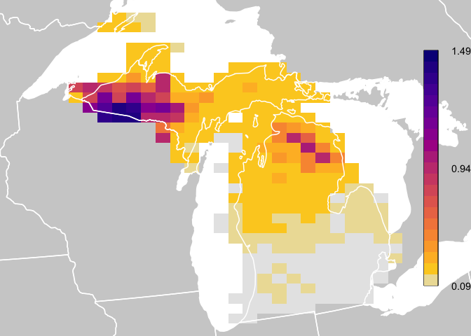

ebirdst: Access and Analyze eBird Status and Trends Data
Installation
Install ebirdst from CRAN with:
install.packages("ebirdst")Alternatively, you can install the development version from GitHub with:
# install.packages("remotes")
remotes::install_github("CornellLabofOrnithology/ebirdst")The current version of ebirdst is designed for working with the eBird Status and Trends data products that make estimates for 2019, with visualizations being released on the web in December 2020, and data access being made available in August 2021. Users are strongly discouraged from comparing Status and Trends results between years due to methodological differences between versions. To request access to previous versions, please contact ebird@cornell.edu.
Data access
As of July 2021, data access is now granted through a Access Request Form at: https://ebird.org/st/request. Access with this form generates a key to be used with this R package and is provided immediately (as long as commercial use is not requested). Our terms of use have been updated to be more permissive in many cases, particularly academic and research use. When requesting data access, please be sure to carefully read the terms of use and ensure that your intended use is not restricted. Data are no longer publicly available via AWS, aside from an example dataset.
After completing the Access Request Form, you will be provided a Status and Trends access key, which you will need when downloading data. To store the key so the ebirdst package can access it when downloading data, use the function set_ebirdst_access_key("XXXXX"), where "XXXXX" is the access key provided to you.
Citation
If you use the the eBird Status & Trends data please cite it with:
Fink, D., T. Auer, A. Johnston, M. Strimas-Mackey, O. Robinson, S. Ligocki, W. Hochachka, C. Wood, I. Davies, M. Iliff, L. Seitz. 2020. eBird Status and Trends, Data Version: 2019; Released: 2020, Cornell Lab of Ornithology, Ithaca, New York. https://doi.org/10.2173/ebirdst.2019
Vignettes
For full package documentation, including a series of vignettes covering the full spectrum from introductory to advanced usage, please see the package website. There are four available vignettes are:
- Introduction: details data access and the structure of the results.
- Introductory mapping: covers the basic of making abundance maps using the eBird Status and Trends data.
- Advanced mapping: shows how to reproduce the seasonal abundance maps, range polygons, and statistics on the eBird Status and Trends website.
-
Non-raster data: covers working with the non-raster data in the
ebirstdata packages, including exploring predictor importance, plotting partial dependence curves for model predictors, and assessing model quality with predictive performance metrics.
Quick Start
This quick start guide shows how to download data and plot abundance values similar to how they are plotted for the eBird Status and Trends Abundance animated maps. In this guide, and throughout all package documentation, a simplified example dataset is used consisting of Yellow-bellied Sapsucker in Michigan. For a full list of the species available for download, look at the data frame ebirst_runs, which is included in this package.
Important note: after downloading the results, do not change the file structure. All functionality in this package relies on the structure inherent in the delivered results. Changing the folder and file structure will cause errors with this package.
library(ebirdst)
library(raster)
library(sf)
library(fields)
library(rnaturalearth)
# download example data, yellow-bellied sapsucker in michigan
dl_path <- ebirdst_download(species = "example_data")
# load relative abundance raster stack with 52 layers, one for each week
abd <- load_raster("abundance", path = dl_path)
# load species specific mapping parameters
pars <- load_fac_map_parameters(dl_path)
# custom coordinate reference system
crs <- pars$custom_projection
# legend breaks
breaks <- pars$abundance_bins
# legend labels for top, middle, and bottom
labels <- attr(breaks, "labels")
# get a date vector specifying which week each raster layer corresponds to
weeks <- parse_raster_dates(abd)
print(weeks)
#> [1] "2019-01-04" "2019-01-11" "2019-01-18" "2019-01-25" "2019-02-01" "2019-02-08" "2019-02-15" "2019-02-22" "2019-03-01"
#> [10] "2019-03-08" "2019-03-15" "2019-03-22" "2019-03-29" "2019-04-05" "2019-04-12" "2019-04-19" "2019-04-26" "2019-05-03"
#> [19] "2019-05-10" "2019-05-17" "2019-05-24" "2019-05-31" "2019-06-07" "2019-06-14" "2019-06-21" "2019-06-28" "2019-07-06"
#> [28] "2019-07-13" "2019-07-20" "2019-07-27" "2019-08-03" "2019-08-10" "2019-08-17" "2019-08-24" "2019-08-31" "2019-09-07"
#> [37] "2019-09-14" "2019-09-21" "2019-09-28" "2019-10-05" "2019-10-12" "2019-10-19" "2019-10-26" "2019-11-02" "2019-11-09"
#> [46] "2019-11-16" "2019-11-23" "2019-11-30" "2019-12-07" "2019-12-14" "2019-12-21" "2019-12-28"
# select a week in the middle of the year
abd <- abd[[26]]
# project to species specific coordinates
# the nearest neighbor method preserves cell values across projections
abd_prj <- projectRaster(abd, crs = crs, method = "ngb")
# get reference data from the rnaturalearth package
# the example data currently shows only the US state of Michigan
wh_states <- ne_states(country = c("United States of America", "Canada"),
returnclass = "sf") %>%
st_transform(crs = crs) %>%
st_geometry()
# start plotting
par(mfrow = c(1, 1), mar = c(0, 0, 0, 0))
# use raster bounding box to set the spatial extent for the plot
bb <- st_as_sfc(st_bbox(trim(abd_prj)))
plot(bb, col = "white", border = "white")
# add background reference data
plot(wh_states, col = "#cfcfcf", border = NA, add = TRUE)
# plot zeroes as light gray
plot(abd_prj, col = "#e6e6e6", maxpixels = ncell(abd_prj),
axes = FALSE, legend = FALSE, add = TRUE)
# define color palette
pal <- abundance_palette(length(breaks) - 1, "weekly")
# plot abundance
plot(abd_prj, col = pal, breaks = breaks, maxpixels = ncell(abd_prj),
axes = FALSE, legend = FALSE, add = TRUE)
# state boundaries
plot(wh_states, add = TRUE, col = NA, border = "white", lwd = 1.5)
# legend
label_breaks <- seq(0, 1, length.out = length(breaks))
image.plot(zlim = c(0, 1), breaks = label_breaks, col = pal,
smallplot = c(0.90, 0.93, 0.15, 0.85),
legend.only = TRUE,
axis.args = list(at = c(0, 0.5, 1),
labels = round(labels, 2),
cex.axis = 0.9, lwd.ticks = 0))